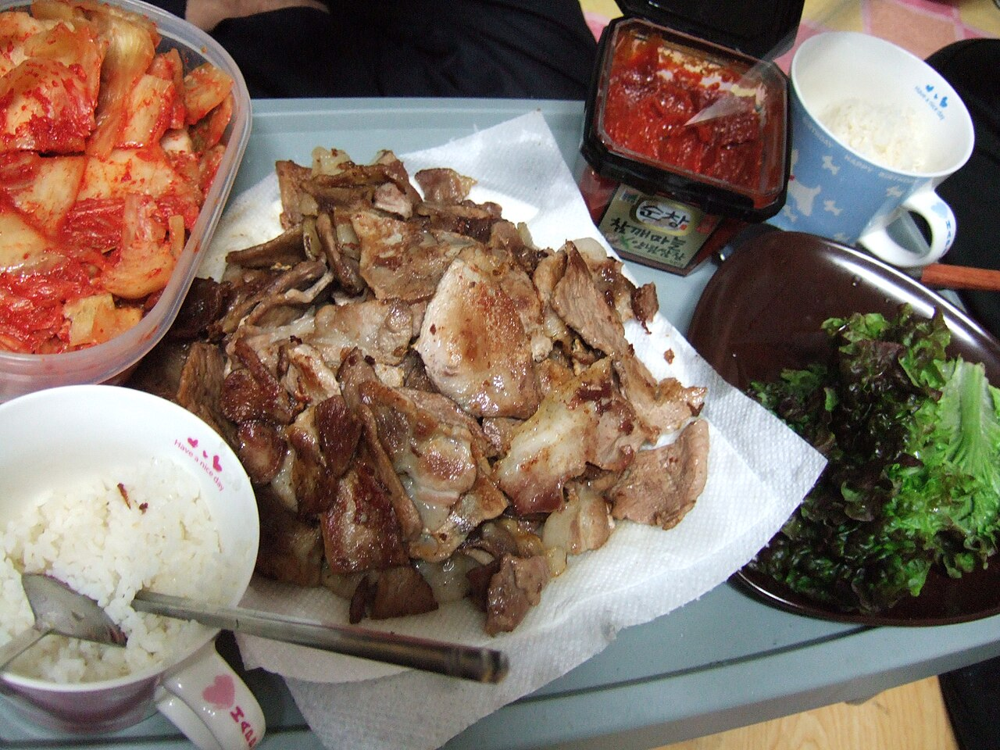
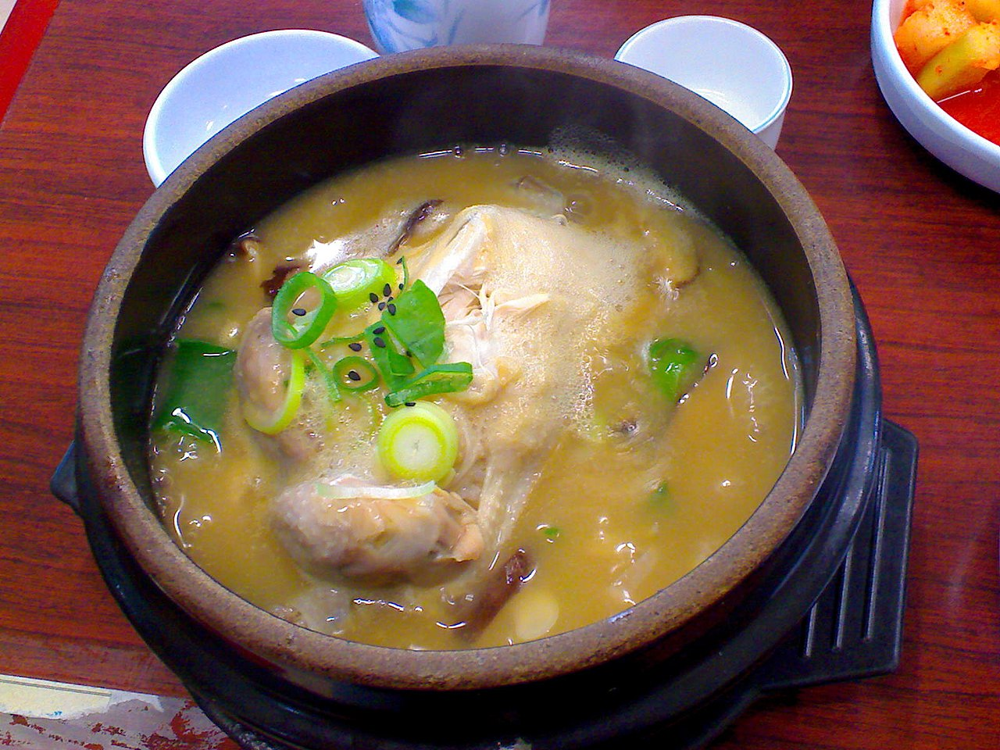
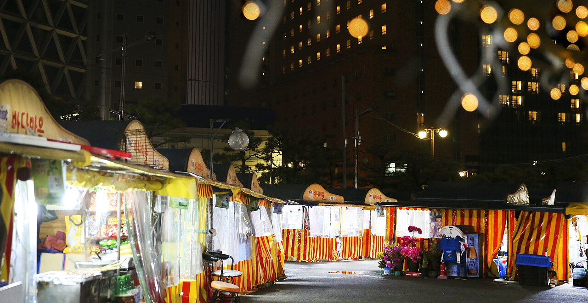

D1 · 抵达
- 下午
- 入住明洞 · 轻量采购
- 晚上
- N 首尔塔日落夜景

首尔 3 天 + 釜山 2 天 + 返程 · 6 天 5 晚 · 放缓版
仁川进 · 仁川出 · 明洞 3 晚 + 釜山站 2 晚
机票酒店已定 · 每天只排一条主线，留白多、不赶路
行程速览
| 日期 | 上午 | 下午 | 晚上 |
|---|---|---|---|
| D1 抵达 | 12:00 落地仁川 | 入住明洞 · 轻量采购 | N 首尔塔日落夜景 |
| D2 首尔 | 景福宫 + 换岗仪式 | 北村韩屋村 · 三清洞咖啡 | 明洞（梨泰院可选） |
| D3 首尔 | 益善洞 / 南大门市场 | 午休 + 明洞补货 | 打包行李 · 早睡 |
| D4 釜山 | KTX 赴釜山 | 松岛海上缆车 · 龙宫云桥 | 广安里沙滩 + 大桥夜景 |
| D5 釜山 | 海云台沙滩 · 东柏岛 | 15:30 胶囊小火车 → 青沙浦 | 海云台日落 · 烤盲鳗 |
| D6 返程 | KTX 回首尔 · 首尔站机动 | AREX 赴机场 · 14:30 起飞 | — |
每日详细安排
🏨 住明洞。第一天不排任何预约项目，航班晚点也不慌。

🏨 住明洞。全天一个片区（钟路），步行串联，不折返。
🏨 住明洞最后一晚。今天的唯一任务：养精神 + 买齐 + 打包。
🏨 住釜山站。今天住得离景点远是事实，往返都打车，一次 20–30 分钟、车费不贵，别把体力花在地铁换乘上。

🏨 住釜山站。全天只在海云台一个片区活动，步行为主。
时间账：07:00 的 KTX → 机场缓冲约 3 小时；就算改坐 08:00 的班次，缓冲仍有 2 小时。不用赶 5 点多的头班车——但 KTX 票一定要提前买，且当天不安排任何游玩。
交通
住宿（已定）
美食清单



首尔：土俗村参鸡汤（景福宫旁）、明洞烤肉/炸鸡、街边鸡蛋糕和辣炒年糕、部队锅、冷面。明洞夜市小吃摊密集，晚餐可以一路走一路吃。
釜山：猪肉汤饭（釜山第一名片）、海云台市场坚果糖饼 + 鱼饼、烤盲鳗（海云台盲鳗一条街）、广安里/松岛海鲜大排档——辣炒章鱼、海鲜锅。
购票清单
重点备忘
弹性备选